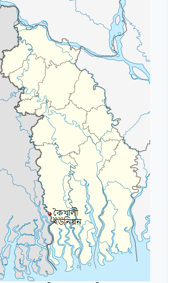

কৈখালী ইউনিয়ন
একবার যেতে দে না আমার ছোট্র সোনার গাঁয় । গায়িকা শাহনাজ রহমতউল্লাহর কাছেই শুধুই প্রিয় নয় তার গাঁ/গ্রাম। প্রত্যেক সৃষ্টিশীল মানুষের কাছে তার গ্রাম সবচেয়ে প্রিয়। আজ আর কোথাও খুজে পাইনা গ্রামের সেই মনোরম চিত্র। সবখানে সভ্যতার সোছায় বদলে দিয়েছে প্রকৃতিকে বিভিন্ন প্রয়োজনে ছুটে যায় সবাই শহরের বিভিন্ন যায়গায় । নিজের গ্রামের এই সুন্দর মনোরম পরিবেশ উপভোগ করার মত / পল্লীর এই অপরুপ সুন্দর্য উপভোগ করার মত সময় খুবই কম হয় মানুষের। পল্লীর সব স্মৃতি অনেক কষ্টে হৃদয়ে লালন ,পালন করে রেখেছে শত প্রতিকূলতার মাঝে আমাদের প্রিয় এই ইউনিয়নটি।উত্তরে নুরনগর ইউনিয়ন ,দক্ষিণে সুন্দরবন,পূবে মাদার নদী,পশ্চিমে কালিন্দী নদী।আয়তন
এক নজরে কৈখালী ইউনিয়নের মৌলিক তথ্য

| আয়তন – ৪৪.৫৯ (বর্গ কিঃ | লোকসংখ্যা – ২৯,৭০৩ জন |
| গ্রামের সংখ্যা – ২২ টি | মৌজার সংখ্যা – ৬ টি |
| হাট/বাজার সংখ্যা -৩ টি | শিক্ষার হার – ৬৫% |
| সরকারী প্রাথমিক বিদ্যালয়- ০৫টি | বে-সরকারী রেজিঃ প্রাঃ বিদ্যালয়- ০১২টি |
| উচ্চ বিদ্যালয়ঃ ১টি,কলেজ- ১ টি | মাদ্রাসা- ৩টি |
| গুরুত্বর্পূণ ধর্মীয় স্থান- ৩ টি |